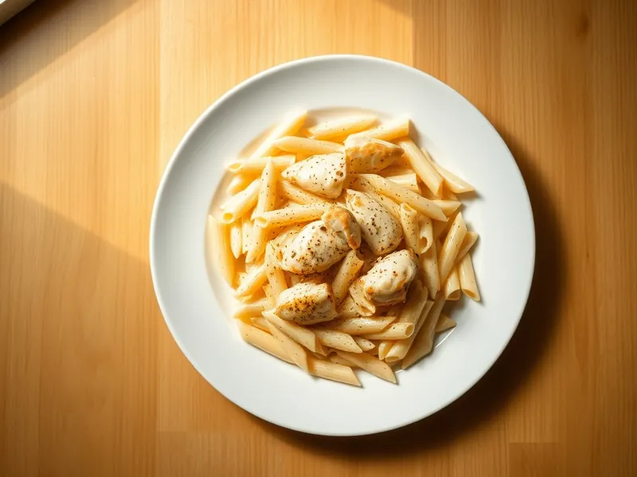

Фото: Иллюстрация ИИ, Cloudflare Workers AI
Паста с курицей в сливочном соусе
Макароны с кусочками куриного филе в соусе из сливок, чеснока и пармезана
25 мин3 порц.678 ккал на порциюБ 40 · Ж 27 · У 67Интернациональная кухня
Продукты на 3 порц.
- Макароны270 г
- Куриное филе300 г
- Сливки 20%200 мл
- Пармезан40 г
- Чеснок2 зуб.
- Сливочное масло1 ст. л.
- Растительное масло1 ст. л.
- Соль2 ч. л.
- Перец чёрный молотый2 щеп.
- Вода3000 мл
Как готовить
- Поставьте воду на сильный огонь, посолите и сварите пасту по инструкции на упаковке, обычно 9-10 минут.
- Куриное филе нарежьте кубиками 2 см, посолите и поперчите.
- Разогрейте растительное масло на сковороде на сильном огне и обжарьте курицу 5-6 минут, пока кусочки не побелеют со всех сторон и не зазолотятся.
- Убавьте огонь до среднего, добавьте сливочное масло и мелко нарезанный чеснок, жарьте 1 минуту.
- Влейте сливки и томите 3-4 минуты до лёгкого загустения, затем вмешайте тёртый пармезан.
- Откиньте пасту, переложите в соус и перемешайте 1 минуту, чтобы соус обволок макароны.
Совет. Если соус получился густым, разбавьте его 2-3 ложками воды от пасты, а не молоком: крахмал в воде делает соус гладким.